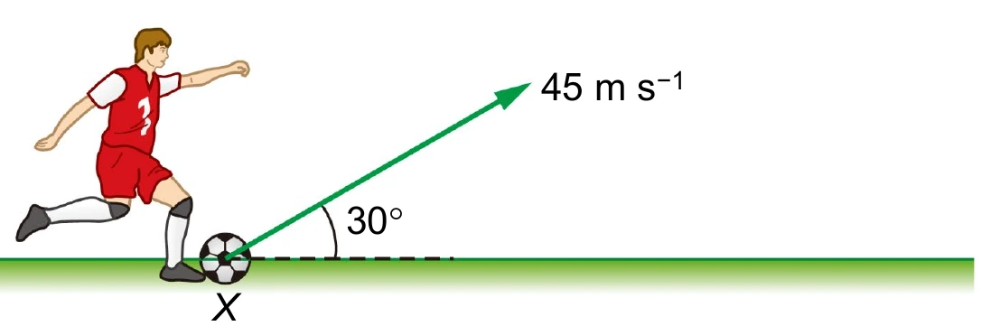
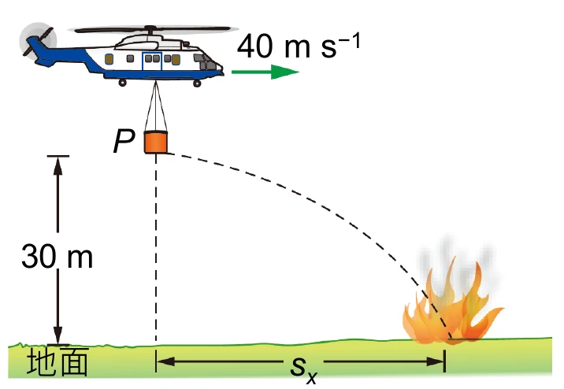
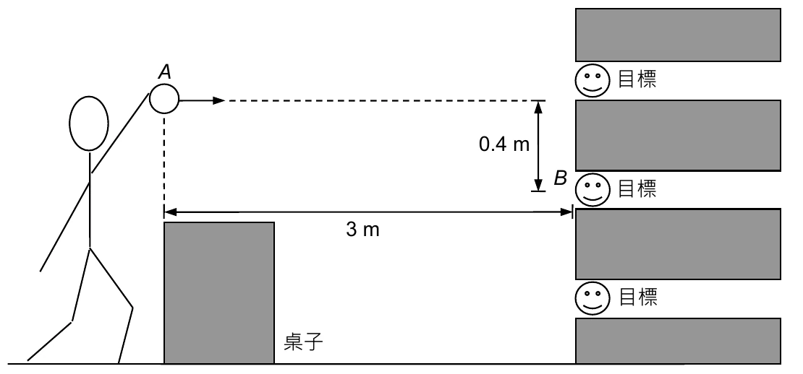
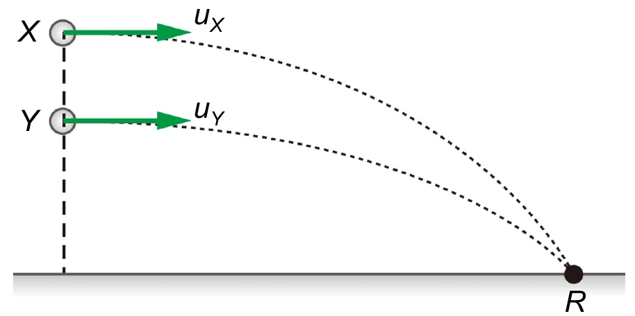
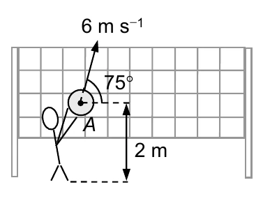
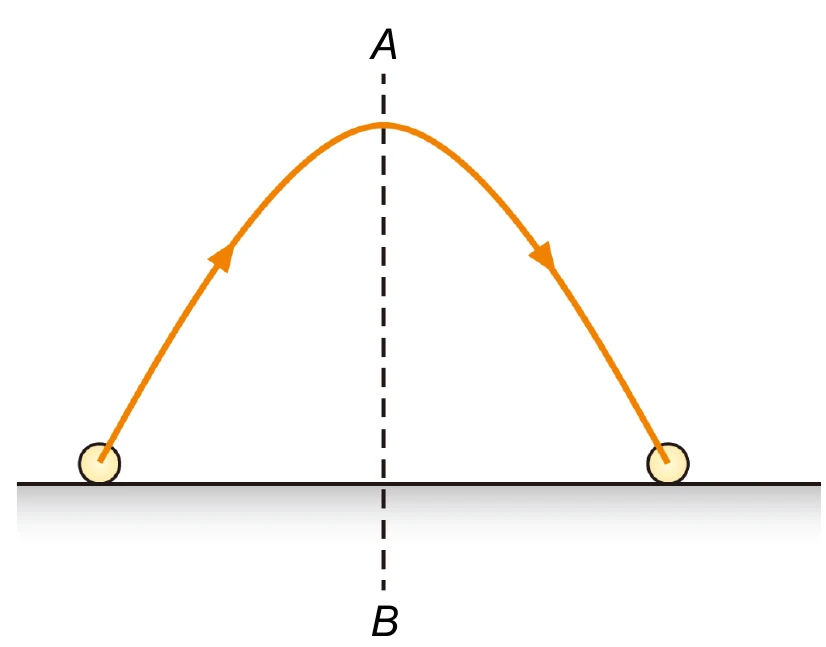
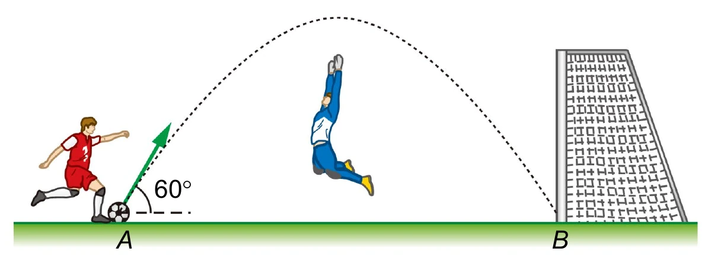
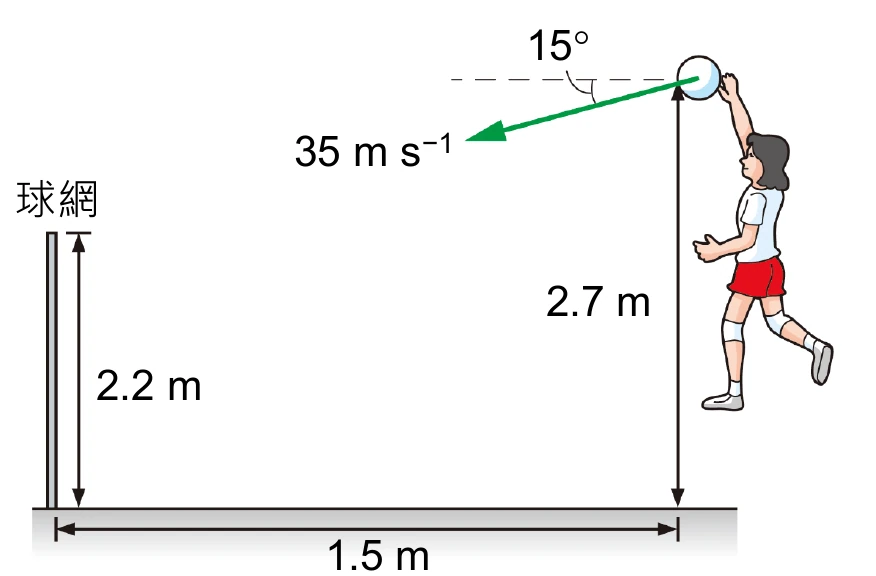
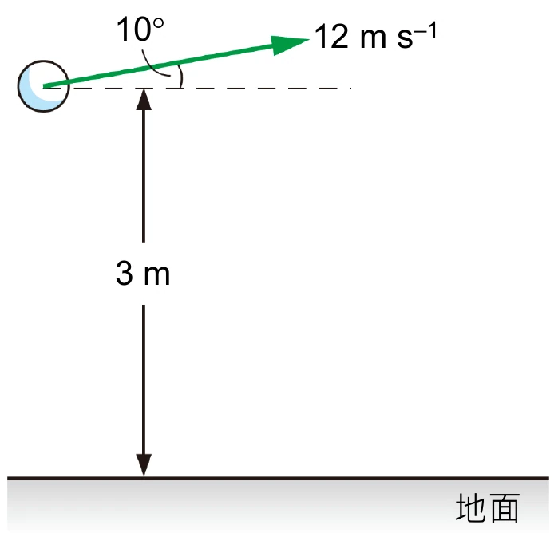

(a) 投射角
求足球射出方向與水平線的夾角。
第 8.2 節

水平射出的拋體 · 工作紙 p.2 A1
沿水平方向拋出時，垂直初速度是多少？
向右為正ux = u，ax = 0
向下為正uy = 0，ay = g
假設空氣阻力可略去不計。
例題 2 · 水平與垂直位移
小球以 8.0 m/s 水平拋出。觀測線在起點右方 2.4 m。小球多久到達觀測線？當時下落了多少？
sx = uxt
2.4 = 8.0t
sy = uyt + ½ayt²
sy = 0 + ½(9.81)(0.30)²
到達觀測線的時間，亦是小球向下加速的時間。
例題 3 · 拋體的末速率

水從離地 30 m 處倒出，離開時的水平速率是 40 m/s。取向右和向下為正。
工作紙 p.2–3 · 鞏固 2

求飛行時間、初速率和在 B 點的速度。取向下和向右為正。
水平射出 · 快測 2
離地高度和水平初速率，哪項影響時間？
已知 g，只由離地高度決定。
球能到達牆面。哪些量決定撞牆的時間？
水平距離 d 和水平初速率 ux。

3 同一落點 R 比較時間、加速度和着地時各速度分量。
X 飛得較久、着地垂直速率較大。兩球加速度相同。Y 的水平速率較大。
以斜角射出的拋體 · 工作紙 p.4 B1
以向右和向上為正。先在草稿上畫速度三角形。
水平方向ux = u cos θ，ax = 0
垂直方向uy = u sin θ，ay = −g
速度與加速度 · 工作紙 p.4 B2–3
比較 A、B 的速率和方向，再看最高點。
同高的 A、B
速率相同，與水平線的夾角相同，垂直分量方向相反。
最高點
vy = 0，vx = ux，加速度仍垂直向下。
工作紙 p.5 · 鞏固 3

初速率 6.0 m/s，投射角為水平線以上 75°。求到最高點的時間，再求第一次到達 2.8 m 高時的水平距離。
vy = uy + ayt
0 = 6 sin 75° − 9.81tt ≈ 0.591 s
sy = uyt + ½ayt²
0.80 = (6 sin 75°)t + ½(−9.81)t²
取較早的解 t ≈ 0.160 s。
sx = uxt = (6 cos 75°)t ≈ 0.248 m
同高起落 · 第 1 部分 · 工作紙 p.6
在同一水平投擲和着陸 · 足球例題 4 · 工作紙 p.7–8
足球以 45 m/s、水平線以上 30° 踢出，在與起點同一高度着地。空氣阻力可略去不計。
每次定格，各畫一張隔離體圖和速度圖。畫完按「繼續播放」。
足球例題 4 · 第 1 步 · 工作紙 p.7
核對剛才的隔離體圖和速度圖。已知 u = 45 m/s，θ = 30°。
水平和垂直分量各是多少？
ux = u cos θ = 45 cos 30°39.0 m/s 向右
uy = u sin θ = 45 sin 30°22.5 m/s 向上
足球例題 4 · 第 2 步 · 工作紙 p.7
核對最高點的隔離體圖和速度圖。
由 X 到最高點，哪個速度分量等於零？
vy = 0，uy = 22.5 m/s，ay = −g
vy² = uy² + 2aysy
0 = 22.5² − 2(9.81)H
H = 25.8 m足球例題 4 · 第 3 步 · 工作紙 p.8
核對着地前一刻的兩張圖。落點與 X 同高。
由 X 到落點，哪個位移等於零？
sy = 0，uy = 22.5 m/s，ay = −g
sy = uyt + ½ayt²
0 = 22.5t + ½(−9.81)t²
t = 4.59 s另一個解 t = 0 對應離腳的一刻。足球例題 4 · 第 4 步 · 工作紙 p.8
沿用着地前的兩張圖，在速度圖圈出求射程所用的分量。
整段飛行的水平速率是多少？
ax = 0，vx = ux ≈ 39.0 m/s
R = sx = uxt
R ≈ 39.0 × 4.59
R = 179 m在同一水平投擲和着陸 · 工作紙 p.9 (a)、(b)

指出對稱軸。由起點到最高點，用了全部飛行時間的多少？
軌跡以穿過最高點的垂直線為對稱軸。上升和下降時間相同。
vy = uy + ayt上
0 = 22.5 − 9.81t上t = 2t上 ≈ 4.59 s
同高起落 · 第 2 部分 · 工作紙 p.9 (c)
同高起落 · 固定投射角 · 工作紙 p.9 (c)
比較 8 m/s 和 16 m/s，在同一水平射出和着地。
飛行時間 t變為 2 倍，因為 uy 加倍。
最大高度 H變為 4 倍，因為 H 隨 uy² 改變。
水平射程 R變為 4 倍，因為 ux 和 t 都加倍。
同高起落 · 第 3 部分 · 工作紙 p.9 (d)
同高起落 · 固定初速率
比較低弧線與高弧線的飛行時間和水平速率。
60° 的 ux 較小，t 較長。兩條路徑的 uxt 相同。
互餘投射角同初速率、同高起落時，θ 和 90° − θ 的射程相同。
同高起落 · 固定初速率 · 工作紙 p.9 (d)
H 和 t角度增大，垂直初速度增大，H 和 t 都增加。
R0° 至 45° 增加，45° 至 90° 減少。
回看 30° 的足球。若只提高投射角，R 要看提高至多少度。
同高起落 · 快測 4
哪個投射角令射程最遠？
哪個投射角令最大高度最高？
45° 最遠，90° 最高。
比較路徑長度、所用時間、水平速率，以及垂直速率會否維持不變。
路徑長度、所用時間相同，水平速率維持不變。垂直速率隨時間改變。
例題 6 · 對稱軌跡的特性

足球以 60° 射出，A 至 B 共用 1.4 s。
個人作答 · 工作紙 p.10
獨立完成 (a) 和 (b)，寫出方程、代入及答案。
求足球射出方向與水平線的夾角。
求 X 點與守門員所在的 Y 點之間的距離。
8.2 小結
vy = 0
用垂直運動求 H。
sy = 0
用垂直運動求 t。
ax = 0
用 R = uxt 求水平射程。
例題 5 · 水平線以下的投射角

取朝球網的水平方向為正，向上為正。先用 1.5 m 求到達球網的時間。
sx = uxt
1.5 = (35 cos 15°)t，t ≈ 0.0444 s
sy = uyt + ½ayt²
sy = (−35 sin 15°)t + ½(−9.81)t² ≈ −0.412 m
2.70 − 0.412 ≈ 2.29 m，高於 2.20 m 的球網。
斜角射出 · 快測 3
小球在離地 h 處斜向上拋出，分量為 ux、uy。
球能到達距離 d 的牆。
哪些量決定時間？
sx = uxt
d = uxt，t = d ÷ ux
球落到地面。
哪些量決定時間？
sy = uyt + ½ayt²
−h = uyt − ½gt²
由 h、uy 及 g 決定。
拋體運動中的能量轉換 · 工作紙 p.12 D1
看三條能量柱。哪一條在飛行期間維持不變？
空氣阻力可略去不計時，總機械能 KE + PE 保持不變。
最高點重力勢能最大，動能最小。斜拋仍有水平速度。
能量與時間 · 工作紙 p.13 D2
在三條線中指出總機械能、動能和重力勢能。
重力勢能的最大值PE最大 = mgH
動能的最小值KE最小 = ½mux²
例題 7 · 利用能量守恆定律

物體以 12 m/s、水平線以上 10° 射出，起點離地 3.0 m。
½mv1² + mgh1 = ½mv2² + mgh2
約去 m，最高點的速率為 12 cos 10°。
½(12²) + 9.81(3.0) = ½(12 cos 10°)² + 9.81h
h = 3.22 m着地時，h2 = 0。
½(12²) + 9.81(3.0) = ½v²
v = 14.2 m/s能量轉換 · 概念核對
以斜角向上投擲，取發射點的勢能為零。到達最高點時，比較動能與重力勢能。
水平速度仍存在。
KE = ½mux² > 0總機械能仍包括動能。
PE = mgH < ½mu²若是垂直上拋，最高點的水平及垂直速度均為零，動能才是零。